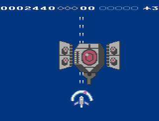
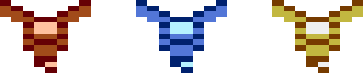
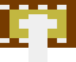
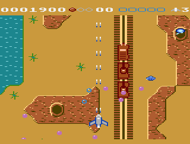
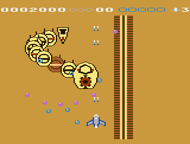
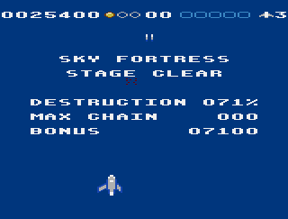

For the Atari 7800
A vertical shooter

Game Manual · 1 player · Joystick controller
The enemy came out of the dark between the stars. Their fortresses hang in the sky above the cities, their battleships sail the seas, and their armored trains roll across the deserts. One by one, the world's defenses have fallen silent.
One fighter is left: the Gamma Force. Its twin Vulcan cannons tear through enemy armor, and its Radiant Sword, a blade of pure energy, can drink in the enemy's own fire and turn it into power.
Your mission: fly the Gamma Force through four battlegrounds, from the Sky Fortress to the Scorched Sands, and destroy the great war machine that guards each one.

Shoot fast, chain your kills, and remember: the pink bullets are your friends, if your sword is out.

You begin with 3 ships. When the last one is lost, the game is over and you return to the title screen. After stage 4 the battle begins again at stage 1, and your score keeps climbing.
Gamma Force is played with a two-button joystick, such as the one that came with your Atari 7800.
The line across the top of the screen keeps you up to date:
 1
2
3
4
5
1
2
3
4
5
Stage and its number appear here when a stage begins. Warning flashes when a boss is on its way: get ready.
You earn an extra ship at 50,000 points, another at 100,000, and one more for every 100,000 after that.
Your main gun. Hold Button 1 and twin shots stream up the screen. It is quick and it never runs out, but bigger enemies take many hits.
Hold Button 2 and an arc of energy forms over your ship. The sword hits hard, so use it on enemies that come close. Its real power is defense: it absorbs every pink bullet that touches it. Each one is worth points, and each one charges your sword gauge.

Pink bullets can be absorbed by the sword. Blue bullets cannot: they pass straight through the blade, so get out of the way.

Absorb 36 pink bullets and your sword gauge is full. A chime sounds, the gauge flashes gold, and your ship glows gold: the Hyper Sword is ready.
Press both buttons at once to unleash it:

Most enemies come in three colors: red, blue and yellow. Destroy three of one color in a row to complete a set. Each set raises your chain level and pays a bonus, and the bonus grows with every set you chain.

| Set | Bonus |
|---|---|
| 1st | 100 |
| 2nd | 200 |
| 3rd | 500 |
| Each set after | 250 more each time |
| Top bonus | 10,000 a set |

Dives in fast, then turns on you. Comes in waves: chain them.

Weaves down the screen and fires a fan of pink needles as it comes.

Sways from side to side and fires rings of pink bullets.

Stops in the sky and aims straight at you.

A heavy, armored craft that hangs over the battle and fills the sky with fire. Gray: no chain.

Dug into fortress decks, rooftops and gun pits. It turns to follow you.

Drives the city streets, its turret tracking you.

Sails the open sea and answers with fans and rings of fire.

A locomotive and its gun cars roll up the railway. Each car is tough.
The Neon Spires' towers can't be destroyed. They block shots and bullets, and flying into one costs you a ship.

A steel fortress hangs over the sea, its decks bristling with turrets.
Boss: Gamma Core.
Its wings carry turrets of their own. Shoot away the wings and the cannon, then crack the armored core.


A city at night. Tanks drive the streets, and towers rise in your path: fly around them.
Boss: Spire Warden.
Pods circle its core and shield it. Destroy every pod and the core opens.


Islands, gun pits and gunboats on the open sea.
Boss: Leviathan.
A battleship longer than the screen. Silence its guns and missile bays, and bring down its bridge: then it carries you to the reactor at its stern, where fighters defend it to the last.


Desert, oases, and armored trains on the railway.
Boss: Dune Wyrm.
A sandworm winding a figure eight. Its head can't be hurt until its tail and every segment are gone, and when you hurt it, it turns and gives chase!
| Pink bullet absorbed by the sword | 10 |
| Bullet cleared by the Hyper Sword | 20 |
| Enemies | 100 – 2,000 |
| Chain bonus, each set | 100 – 10,000 |
| Boss part (a gun, a wing, a pod …) | 2,000 |
| Boss core | 10,000 |
| Every other part destroyed before the core | 20,000 |
When a boss falls, the results show how much of it you destroyed and your longest chain, and you get a bonus:
| Each percent of the boss destroyed | 100 |
| Each level of your longest chain | 100 |
| Perfect destruction (100%) | 10,000 |

Four battlegrounds. Four colossal bosses. One fighter with a sword of light.
Gamma Force is a demake of MegaGammaForce for the Picocomputer 6502, rebuilt for the Atari 7800 with smooth scrolling, POKEY music, and the chain, the sword and the bosses of the original.
Atari Gamma Force © 2026 Jason Rowe. Free software,
released under the GNU General Public License, version 3.
Atari and Atari 7800 are trademarks of their owners. This is an
independent game, not made or endorsed by Atari.